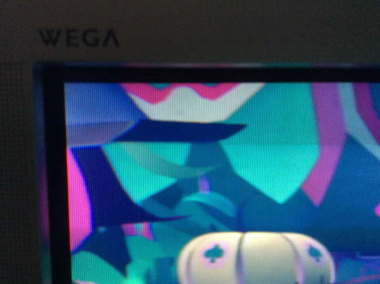
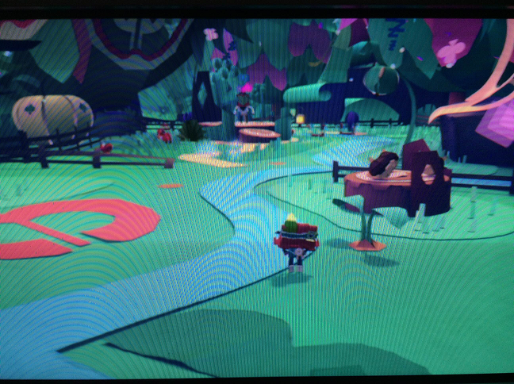
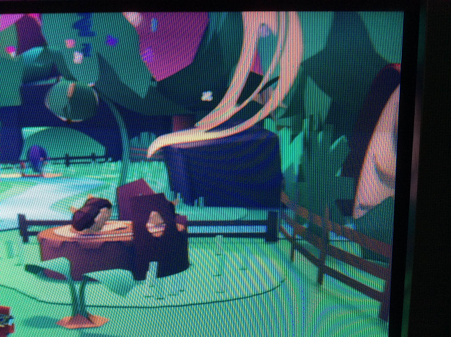
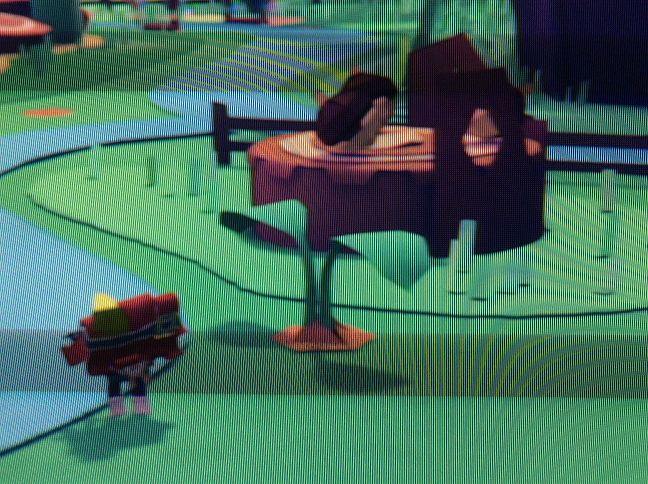

20150914 - Tearaway Unfolded PS4 on Wega CRT HDTV
Using an iPad camera to take CRT shots didn't work out at all
(severe moire patterns and noise reduction logic getting in the way),
so the shots below don't accurately describe what it really looks like...
Tearaway Unfolded on PS4 on these last generation "HD Ready" Wega CRT HDTVs
looks fantastic. Absolutely no aliasing at all.
The combination of in-game MSAA and 1080p to 720p scan-out scaling in the PS4
works out quite well.



